Numpy and Matplotlib#
This lecture will introduce NumPy and Matplotlib. These are two of the most fundamental parts of the scientific python “ecosystem”. Most everything else is built on top of them.
Numpy: The fundamental package for scientific computing with Python
Website: https://numpy.org/
GitHub: numpy/numpy
Matlotlib: Matplotlib is a comprehensive library for creating static, animated, and interactive visualizations in Python.
Website: https://matplotlib.org/
GitHub: matplotlib/matplotlib
Importing and Examining a New Package#
This will be our first experience with importing a package which is not part of the Python standard library.
import numpy as np
What did we just do? We imported a package. This brings new variables (mostly functions) into our interpreter. We access them as follows.
# find out what is in our namespace
dir()
['In',
'Out',
'_',
'__',
'___',
'__builtin__',
'__builtins__',
'__doc__',
'__loader__',
'__name__',
'__package__',
'__spec__',
'_dh',
'_i',
'_i1',
'_i2',
'_ih',
'_ii',
'_iii',
'_oh',
'exit',
'get_ipython',
'np',
'open',
'quit']
# find out what's in numpy
dir(np)
['False_',
'ScalarType',
'True_',
'_CopyMode',
'_NoValue',
'__NUMPY_SETUP__',
'__all__',
'__array_api_version__',
'__array_namespace_info__',
'__builtins__',
'__cached__',
'__config__',
'__dir__',
'__doc__',
'__expired_attributes__',
'__file__',
'__former_attrs__',
'__future_scalars__',
'__getattr__',
'__loader__',
'__name__',
'__numpy_submodules__',
'__package__',
'__path__',
'__spec__',
'__version__',
'_array_api_info',
'_core',
'_distributor_init',
'_expired_attrs_2_0',
'_globals',
'_int_extended_msg',
'_mat',
'_msg',
'_pyinstaller_hooks_dir',
'_pytesttester',
'_specific_msg',
'_type_info',
'_typing',
'_utils',
'abs',
'absolute',
'acos',
'acosh',
'add',
'all',
'allclose',
'amax',
'amin',
'angle',
'any',
'append',
'apply_along_axis',
'apply_over_axes',
'arange',
'arccos',
'arccosh',
'arcsin',
'arcsinh',
'arctan',
'arctan2',
'arctanh',
'argmax',
'argmin',
'argpartition',
'argsort',
'argwhere',
'around',
'array',
'array2string',
'array_equal',
'array_equiv',
'array_repr',
'array_split',
'array_str',
'asanyarray',
'asarray',
'asarray_chkfinite',
'ascontiguousarray',
'asfortranarray',
'asin',
'asinh',
'asmatrix',
'astype',
'atan',
'atan2',
'atanh',
'atleast_1d',
'atleast_2d',
'atleast_3d',
'average',
'bartlett',
'base_repr',
'binary_repr',
'bincount',
'bitwise_and',
'bitwise_count',
'bitwise_invert',
'bitwise_left_shift',
'bitwise_not',
'bitwise_or',
'bitwise_right_shift',
'bitwise_xor',
'blackman',
'block',
'bmat',
'bool',
'bool_',
'broadcast',
'broadcast_arrays',
'broadcast_shapes',
'broadcast_to',
'busday_count',
'busday_offset',
'busdaycalendar',
'byte',
'bytes_',
'c_',
'can_cast',
'cbrt',
'cdouble',
'ceil',
'char',
'character',
'choose',
'clip',
'clongdouble',
'column_stack',
'common_type',
'complex128',
'complex64',
'complexfloating',
'compress',
'concat',
'concatenate',
'conj',
'conjugate',
'convolve',
'copy',
'copysign',
'copyto',
'core',
'corrcoef',
'correlate',
'cos',
'cosh',
'count_nonzero',
'cov',
'cross',
'csingle',
'ctypeslib',
'cumprod',
'cumsum',
'cumulative_prod',
'cumulative_sum',
'datetime64',
'datetime_as_string',
'datetime_data',
'deg2rad',
'degrees',
'delete',
'diag',
'diag_indices',
'diag_indices_from',
'diagflat',
'diagonal',
'diff',
'digitize',
'divide',
'divmod',
'dot',
'double',
'dsplit',
'dstack',
'dtype',
'dtypes',
'e',
'ediff1d',
'einsum',
'einsum_path',
'emath',
'empty',
'empty_like',
'equal',
'errstate',
'euler_gamma',
'exceptions',
'exp',
'exp2',
'expand_dims',
'expm1',
'extract',
'eye',
'f2py',
'fabs',
'fft',
'fill_diagonal',
'finfo',
'fix',
'flatiter',
'flatnonzero',
'flexible',
'flip',
'fliplr',
'flipud',
'float16',
'float32',
'float64',
'float_power',
'floating',
'floor',
'floor_divide',
'fmax',
'fmin',
'fmod',
'format_float_positional',
'format_float_scientific',
'frexp',
'from_dlpack',
'frombuffer',
'fromfile',
'fromfunction',
'fromiter',
'frompyfunc',
'fromregex',
'fromstring',
'full',
'full_like',
'gcd',
'generic',
'genfromtxt',
'geomspace',
'get_include',
'get_printoptions',
'getbufsize',
'geterr',
'geterrcall',
'gradient',
'greater',
'greater_equal',
'half',
'hamming',
'hanning',
'heaviside',
'histogram',
'histogram2d',
'histogram_bin_edges',
'histogramdd',
'hsplit',
'hstack',
'hypot',
'i0',
'identity',
'iinfo',
'imag',
'index_exp',
'indices',
'inexact',
'inf',
'info',
'inner',
'insert',
'int16',
'int32',
'int64',
'int8',
'int_',
'intc',
'integer',
'interp',
'intersect1d',
'intp',
'invert',
'is_busday',
'isclose',
'iscomplex',
'iscomplexobj',
'isdtype',
'isfinite',
'isfortran',
'isin',
'isinf',
'isnan',
'isnat',
'isneginf',
'isposinf',
'isreal',
'isrealobj',
'isscalar',
'issubdtype',
'iterable',
'ix_',
'kaiser',
'kron',
'lcm',
'ldexp',
'left_shift',
'less',
'less_equal',
'lexsort',
'lib',
'linalg',
'linspace',
'little_endian',
'load',
'loadtxt',
'log',
'log10',
'log1p',
'log2',
'logaddexp',
'logaddexp2',
'logical_and',
'logical_not',
'logical_or',
'logical_xor',
'logspace',
'long',
'longdouble',
'longlong',
'ma',
'mask_indices',
'matmul',
'matrix',
'matrix_transpose',
'matvec',
'max',
'maximum',
'may_share_memory',
'mean',
'median',
'memmap',
'meshgrid',
'mgrid',
'min',
'min_scalar_type',
'minimum',
'mintypecode',
'mod',
'modf',
'moveaxis',
'multiply',
'nan',
'nan_to_num',
'nanargmax',
'nanargmin',
'nancumprod',
'nancumsum',
'nanmax',
'nanmean',
'nanmedian',
'nanmin',
'nanpercentile',
'nanprod',
'nanquantile',
'nanstd',
'nansum',
'nanvar',
'ndarray',
'ndenumerate',
'ndim',
'ndindex',
'nditer',
'negative',
'nested_iters',
'newaxis',
'nextafter',
'nonzero',
'not_equal',
'number',
'object_',
'ogrid',
'ones',
'ones_like',
'outer',
'packbits',
'pad',
'partition',
'percentile',
'permute_dims',
'pi',
'piecewise',
'place',
'poly',
'poly1d',
'polyadd',
'polyder',
'polydiv',
'polyfit',
'polyint',
'polymul',
'polynomial',
'polysub',
'polyval',
'positive',
'pow',
'power',
'printoptions',
'prod',
'promote_types',
'ptp',
'put',
'put_along_axis',
'putmask',
'quantile',
'r_',
'rad2deg',
'radians',
'random',
'ravel',
'ravel_multi_index',
'real',
'real_if_close',
'rec',
'recarray',
'reciprocal',
'record',
'remainder',
'repeat',
'require',
'reshape',
'resize',
'result_type',
'right_shift',
'rint',
'roll',
'rollaxis',
'roots',
'rot90',
'round',
's_',
'save',
'savetxt',
'savez',
'savez_compressed',
'sctypeDict',
'searchsorted',
'select',
'set_printoptions',
'setbufsize',
'setdiff1d',
'seterr',
'seterrcall',
'setxor1d',
'shape',
'shares_memory',
'short',
'show_config',
'show_runtime',
'sign',
'signbit',
'signedinteger',
'sin',
'sinc',
'single',
'sinh',
'size',
'sort',
'sort_complex',
'spacing',
'split',
'sqrt',
'square',
'squeeze',
'stack',
'std',
'str_',
'strings',
'subtract',
'sum',
'swapaxes',
'take',
'take_along_axis',
'tan',
'tanh',
'tensordot',
'test',
'testing',
'tile',
'timedelta64',
'trace',
'transpose',
'trapezoid',
'tri',
'tril',
'tril_indices',
'tril_indices_from',
'trim_zeros',
'triu',
'triu_indices',
'triu_indices_from',
'true_divide',
'trunc',
'typecodes',
'typename',
'typing',
'ubyte',
'ufunc',
'uint',
'uint16',
'uint32',
'uint64',
'uint8',
'uintc',
'uintp',
'ulong',
'ulonglong',
'union1d',
'unique',
'unique_all',
'unique_counts',
'unique_inverse',
'unique_values',
'unpackbits',
'unravel_index',
'unsignedinteger',
'unstack',
'unwrap',
'ushort',
'vander',
'var',
'vdot',
'vecdot',
'vecmat',
'vectorize',
'void',
'vsplit',
'vstack',
'where',
'zeros',
'zeros_like']
# find out what version we have
np.__version__
'2.5.4'
There is no way we could explicitly teach each of these functions. The numpy documentation is crucial!
NDArrays#
The core class is the numpy ndarray (n-dimensional array).
The main difference between a numpy array an a more general data container such as list are the following:
Numpy arrays can have N dimensions (while lists, tuples, etc. only have 1)
Numpy arrays hold values of the same datatype (e.g.
int,float), whilelistscan contain anything.Numpy optimizes numerical operations on arrays. Numpy is fast!
from IPython.display import Image
Image(url='http://docs.scipy.org/doc/numpy/_images/threefundamental.png')

# create an array from a list
a = np.array([9,0,2,1,0])
# find out the datatype
a.dtype
dtype('int64')
# find out the shape
a.shape
(5,)
# what is the shape
type(a.shape)
tuple
# another array with a different datatype and shape
b = np.array([[5,3,1,9],[9,2,3,0]], dtype=np.float64)
# check dtype and shape
b.dtype, b.shape
(dtype('float64'), (2, 4))
Note
The fastest varying dimension is the last dimension! The outer level of the hierarchy is the first dimension. (This is called “c-style” indexing)
Array Creation#
There are lots of ways to create arrays.
# create some uniform arrays
c = np.zeros((9,9))
d = np.ones((3,6,3), dtype=np.complex128)
e = np.full((3,3), np.pi)
e = np.ones_like(c)
f = np.zeros_like(d)
arange works very similar to range, but it populates the array “eagerly” (i.e. immediately), rather than generating the values upon iteration.
np.arange(10)
array([0, 1, 2, 3, 4, 5, 6, 7, 8, 9])
arange is left inclusive, right exclusive, just like range, but also works with floating-point numbers.
np.arange(2,4,0.25)
array([2. , 2.25, 2.5 , 2.75, 3. , 3.25, 3.5 , 3.75])
A frequent need is to generate an array of N numbers, evenly spaced between two values. That is what linspace is for.
np.linspace(2,4,20)
array([2. , 2.10526316, 2.21052632, 2.31578947, 2.42105263,
2.52631579, 2.63157895, 2.73684211, 2.84210526, 2.94736842,
3.05263158, 3.15789474, 3.26315789, 3.36842105, 3.47368421,
3.57894737, 3.68421053, 3.78947368, 3.89473684, 4. ])
# log spaced
np.logspace(1,2,10)
array([ 10. , 12.91549665, 16.68100537, 21.5443469 ,
27.82559402, 35.93813664, 46.41588834, 59.94842503,
77.42636827, 100. ])
Numpy also has some utilities for helping us generate multi-dimensional arrays.
meshgrid creates 2D arrays out of a combination of 1D arrays.
x = np.linspace(-2*np.pi, 2*np.pi, 100)
y = np.linspace(-np.pi, np.pi, 50)
xx, yy = np.meshgrid(x, y)
xx.shape, yy.shape
((50, 100), (50, 100))
Indexing#
Basic indexing is similar to lists
# get some individual elements of xx
xx[0,0], xx[-1,-1], xx[3,-5]
(np.float64(-6.283185307179586),
np.float64(6.283185307179586),
np.float64(5.775453161144872))
# get some whole rows and columns
xx[0].shape, xx[:,-1].shape
((100,), (50,))
# get some ranges
xx[3:10,30:40].shape
(7, 10)
There are many advanced ways to index arrays. You can read about them in the manual. Here is one example.
# use a boolean array as an index
idx = xx<0
yy[idx].shape
(2500,)
# the array got flattened
xx.ravel().shape
(5000,)
Visualizing Arrays with Matplotlib#
It can be hard to work with big arrays without actually seeing anything with our eyes! We will now bring in Matplotib to start visualizating these arrays. For now we will just skim the surface of Matplotlib. Much more depth will be provided in the next chapter.
from matplotlib import pyplot as plt
For plotting a 1D array as a line, we use the plot command.
plt.plot(x)
[<matplotlib.lines.Line2D at 0x125a80c80>]
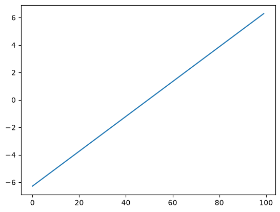
There are many ways to visualize 2D data.
He we use pcolormesh.
plt.pcolormesh(xx)
<matplotlib.collections.QuadMesh at 0x125aa3230>
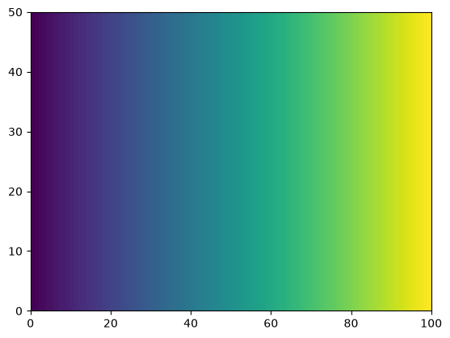
plt.pcolormesh(yy)
<matplotlib.collections.QuadMesh at 0x1106d8200>
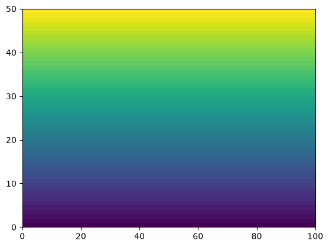
Array Operations#
There are a huge number of operations available on arrays. All the familiar arithemtic operators are applied on an element-by-element basis.
Basic Math#
f = np.sin(xx) * np.cos(0.5*yy)
plt.pcolormesh(f)
<matplotlib.collections.QuadMesh at 0x125aa3ad0>
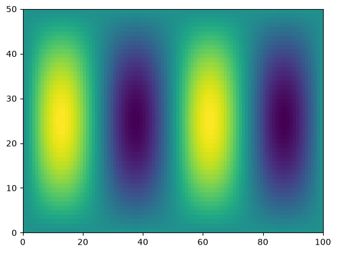
Manipulating array dimensions#
Swapping the dimension order is accomplished by calling transpose.
f_transposed = f.transpose()
plt.pcolormesh(f_transposed)
<matplotlib.collections.QuadMesh at 0x125c69370>
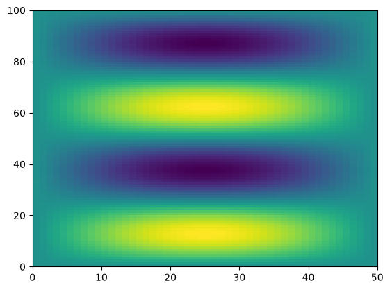
We can also manually change the shape of an array…as long as the new shape has the same number of elements.
g = np.reshape(f, (8,9))
---------------------------------------------------------------------------
ValueError Traceback (most recent call last)
Cell In[29], line 1
----> 1 g = np.reshape(f, (8,9))
File /opt/homebrew/anaconda3/envs/geoscience/lib/python3.12/site-packages/numpy/_core/fromnumeric.py:299, in reshape(a, shape, order, copy)
297 if copy is not None:
298 return _wrapfunc(a, 'reshape', shape, order=order, copy=copy)
--> 299 return _wrapfunc(a, 'reshape', shape, order=order)
File /opt/homebrew/anaconda3/envs/geoscience/lib/python3.12/site-packages/numpy/_core/fromnumeric.py:54, in _wrapfunc(obj, method, *args, **kwds)
51 return _wrapit(obj, method, *args, **kwds)
53 try:
---> 54 return bound(*args, **kwds)
55 except TypeError:
56 # A TypeError occurs if the object does have such a method in its
57 # class, but its signature is not identical to that of NumPy's. This
(...) 61 # Call _wrapit from within the except clause to ensure a potential
62 # exception has a traceback chain.
63 return _wrapit(obj, method, *args, **kwds)
ValueError: cannot reshape array of size 5000 into shape (8,9)
However, be careful with reshapeing data! You can accidentally lose the structure of the data.
g = np.reshape(f, (200,25))
plt.pcolormesh(g)
<matplotlib.collections.QuadMesh at 0x7efecac11c70>
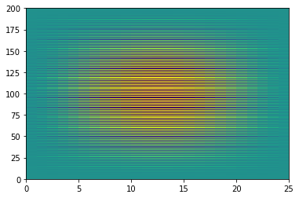
We can also “tile” an array to repeat it many times.
f_tiled = np.tile(f,(3, 2))
plt.pcolormesh(f_tiled)
<matplotlib.collections.QuadMesh at 0x7efecab78250>
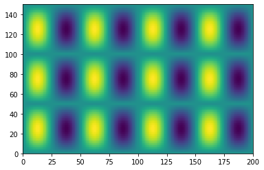
Another common need is to add an extra dimension to an array.
This can be accomplished via indexing with None.
x.shape
(100,)
x[None, :].shape
(1, 100)
x[None, :, None, None].shape
(1, 100, 1, 1)
Broadcasting#
Not all the arrays we want to work with will have the same size.
One approach would be to manually “expand” our arrays to all be the same size, e.g. using tile.
Broadcasting is a more efficient way to multiply arrays of different sizes
Numpy has specific rules for how broadcasting works.
These can be confusing but are worth learning if you plan to work with Numpy data a lot.
The core concept of broadcasting is telling Numpy which dimensions are supposed to line up with each other.
Image(url='http://scipy-lectures.github.io/_images/numpy_broadcasting.png',
width=720)

Dimensions are automatically aligned starting with the last dimension. If the last two dimensions have the same length, then the two arrays can be broadcast.
print(f.shape, x.shape)
g = f * x
print(g.shape)
(50, 100) (100,)
(50, 100)
plt.pcolormesh(g)
<matplotlib.collections.QuadMesh at 0x7efecabed310>
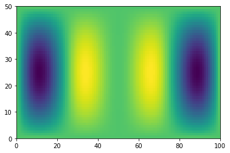
However, if the last two dimensions are not the same, Numpy cannot just automatically figure it out.
# multiply f by y
print(f.shape, y.shape)
h = f * y
(50, 100) (50,)
---------------------------------------------------------------------------
ValueError Traceback (most recent call last)
/tmp/ipykernel_442/1156475932.py in <module>
1 # multiply f by y
2 print(f.shape, y.shape)
----> 3 h = f * y
ValueError: operands could not be broadcast together with shapes (50,100) (50,)
We can help numpy by adding an extra dimension to y at the end.
Then the length-50 dimensions will line up.
print(f.shape, y[:, None].shape)
h = f * y[:, None]
print(h.shape)
(50, 100) (50, 1)
(50, 100)
plt.pcolormesh(h)
<matplotlib.collections.QuadMesh at 0x7efecaabaee0>
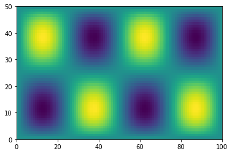
Reduction Operations#
In scientific data analysis, we usually start with a lot of data and want to reduce it down in order to make plots of summary tables. Operations that reduce the size of numpy arrays are called “reductions”. There are many different reduction operations. Here we will look at some of the most common ones.
# sum
g.sum()
-3083.038387807155
# mean
g.mean()
-0.616607677561431
# standard deviation
g.std()
1.6402280119141424
A key property of numpy reductions is the ability to operate on just one axis.
# apply on just one axis
g_ymean = g.mean(axis=0)
g_xmean = g.mean(axis=1)
plt.plot(x, g_ymean)
[<matplotlib.lines.Line2D at 0x7efecaa9b790>]
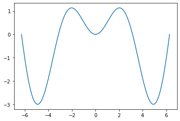
plt.plot(g_xmean, y)
[<matplotlib.lines.Line2D at 0x7efecaa00610>]
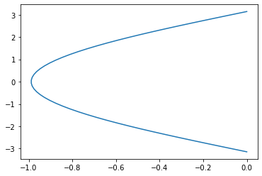
Data Files#
It can be useful to save numpy data into files.
np.save('g.npy', g)
Warning
Numpy .npy files are a convenient way to store temporary data, but they are not considered a robust archival format.
Later we will learn about NetCDF, the recommended way to store earth and environmental data.
g_loaded = np.load('g.npy')
np.testing.assert_equal(g, g_loaded)